Rivian First-Person Blender Prototype
1. Project Overview
This completed first-person Blender prototype connects the Rivian mobile interface to the physical R1S. The sequence raises the phone, shows unlock feedback, lowers the phone, and approaches the vehicle as the frunk opens. The final V3 animation is 10 seconds at 30 fps, rendered at 1920 × 1080.
2. Initial Concept and Sketches
Three original sketches explored compositions involving the Rivian and a smartphone. The exterior interaction placed the phone in the foreground and the vehicle behind it. This composition became the basis for the first-person animation.
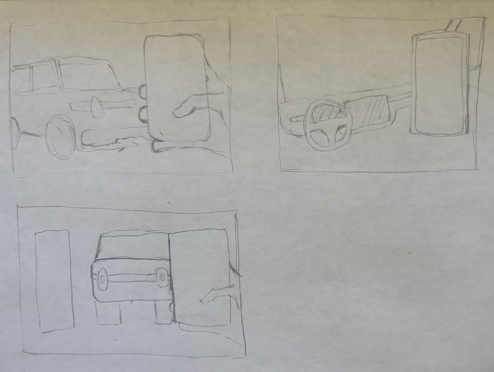
3. Rivian Model and Environment
The Rivian R1S was imported from the credited Sketchfab model and positioned alongside the phone. An outdoor parking environment supplied the background and reflections. The early composition below documents the scene before the completed hand and animation work.
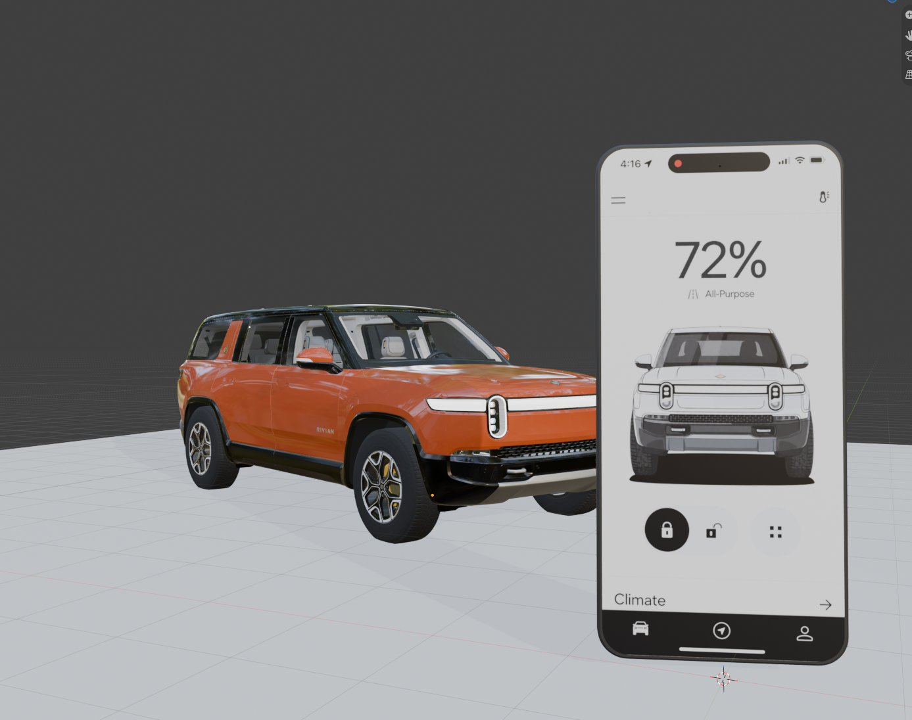
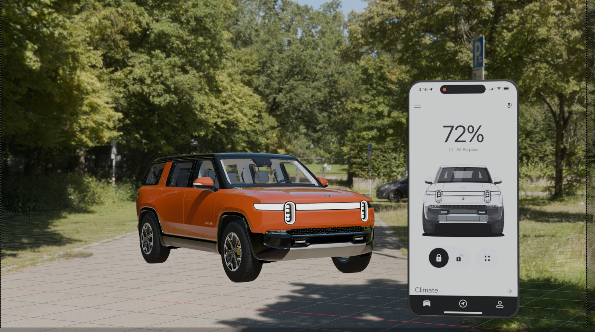
4. iPhone Modeling and UI
The phone began as a plane with adjusted proportions, rounded corners, and thickness. Separate materials distinguish the body and screen. The Rivian interface image was then applied to the screen as a texture.
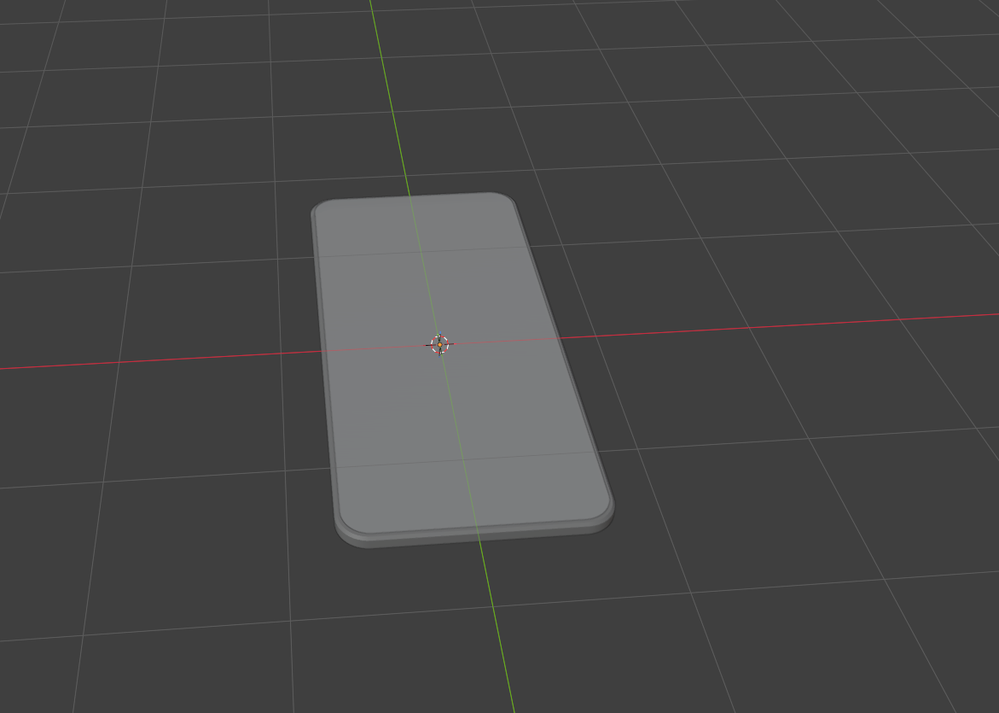
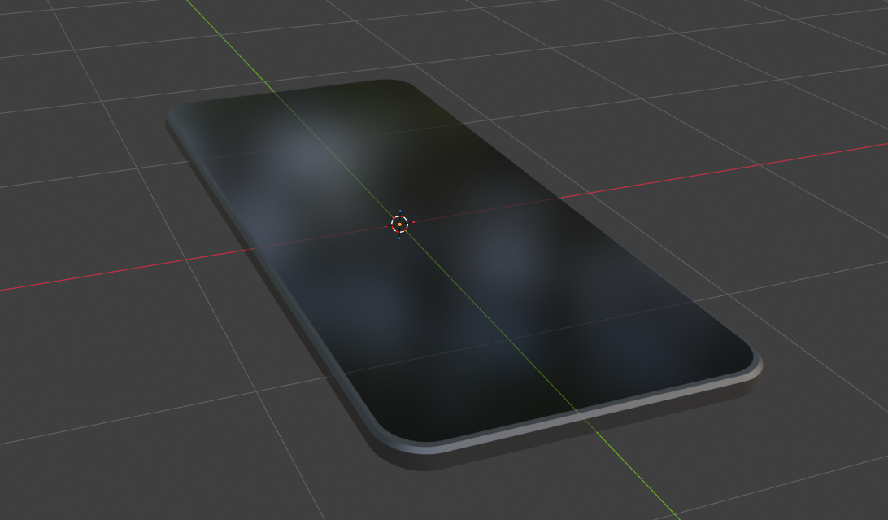

5. Hand Rigging and Positioning
The original viewport screenshots document the phone grip and wrist positioning. The completed scene contains a right-hand armature with 58 bones, together with a controller that moves the phone and hand. A separate usable rig-structure screenshot was not available; the original grip and wrist screenshots are retained here.
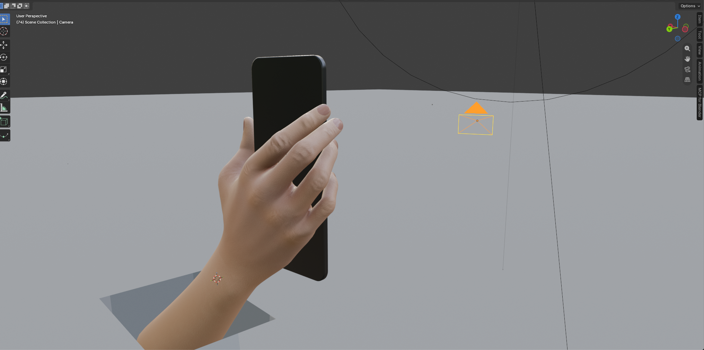

6. Camera and Unlock Animation
The timeline screenshot records the camera and phone setup with animation keys. In V3, a brief screen highlight marks unlock around frames 76–86, followed by the vehicle lighting response. The camera then approaches the Rivian while the phone lowers out of view.

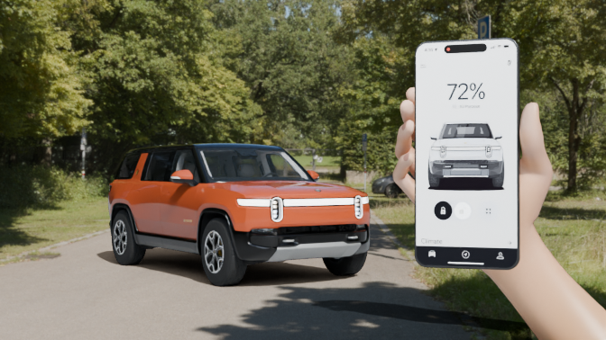
7. Frunk Animation
The frunk uses an animated hinge controller in the completed scene. Existing V3 diagnostic renders show the tub, rim, sidewalls, and floor from elevated angles. V3 refined these interior materials while preserving the existing geometry.
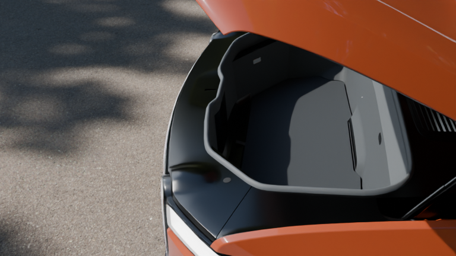
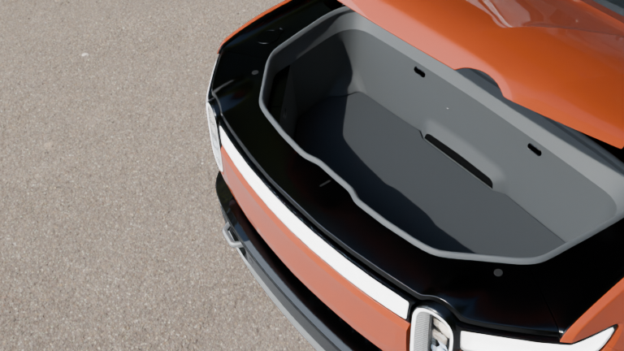
8. Challenges and Iterations
The earlier documentation identified consistent phone corners and matching the vehicle to the environment as challenges. Later saved versions document lighting, arm placement, and timing reviews. V3 refined unlock feedback, the camera approach, and the frunk interior materials; the final first-person angle still partly obscures the lower frunk floor.

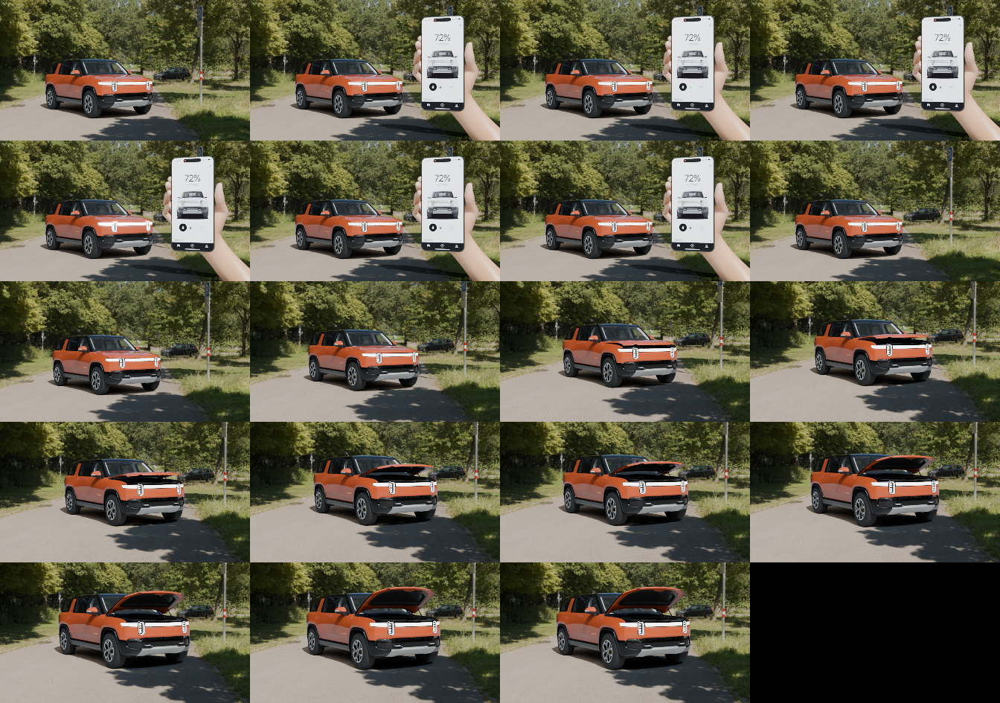
9. Final Result
The completed V3 sequence brings the phone interaction, vehicle feedback, camera movement, and frunk opening together. Use the player below to review the full final animation. The still images are original full-resolution final-render frames; the smaller preview is also available.
Open or download final V3 animation

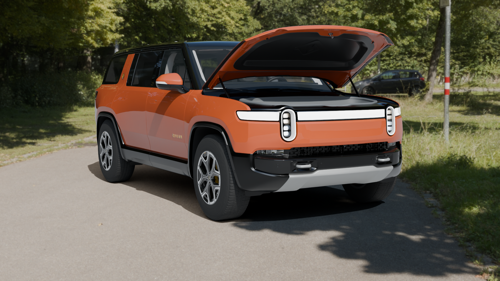
10. References and Resources
These resources were identified in the existing project documentation or supplied with this assignment. The original phone interface texture remains in the images folder. No additional tutorial usage or user testing is claimed.